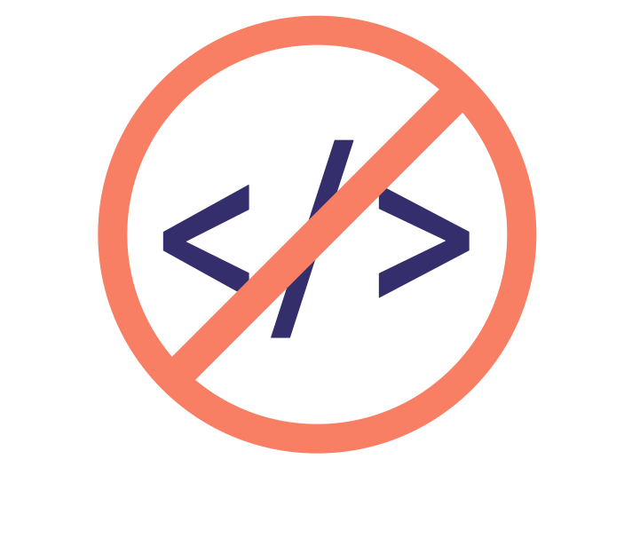

QUI SUIS-JE
Je suis actuellement étudiant en BTS SIO et je me suis passionné pour le développement. Avant ce BTS, j'ai obtenu mon BAC Technologique STI2D option SIN. Ces années d'études m'ont donc permis d'avoir les bases de certains langages, comme le C++.
Je me suis lancé dans la programmation grâce à mon entourage, qui travaille (ou travaillait) en grande partie dans le corps informatique, c'était probablement écrit dans ma destinée. Je suis passionné par le fonctionnement des objets qui nous entourent, j'aime découvrir/tester de nouvelles technologies, ce qui m'a poussé à essayer Unreal Engine .
Au fil des années, la musique est devenue une passion, à l'image de l'informatique et ce serait un plaisir de pouvoir lier les deux.
Ne pas être en cours ne m'empêche pas de coder, au contraire ; j'ai participé à des projets d'amis, par exemple. J'ai aussi plusieurs expériences professionnelles, dans le code ou dans d'autres domaines. Si l'avenir répond à mes attentes, j'aimerais trouver une place dans des équipes de développement logiciel.
- Baccalauréat Technologique STI2D 2017-2019
- BTS SIO Option Slam 2019-2021
MES COMPETENCES
Programmation
Programmation logiciel :
C++, C#, PHP, WPF
Framework :
Symfony, React native
Logiciel utilisé

Maîtrisés
Webstorm (dev web)
Mysql Workbench
Visual Studio (2019/code)
Docker
Git / GitHub Desktop
VMware Workstation
Autre

Notions
Projet agile
Versionning
Machine Virtuelle
PROJETS/EXPERIENCES PROFESSIONNELLES
Gestion de stock d'un site d'E-commerce pour un vendeur de sous vêtements

Projet réalisé avec le framework Symfony (à deux)
But : Créer un outil de gestion de stock pour remplacer les fichiers excels qui étaient utilisés auparavant
Tâches : Réalisation du schéma de base données puis développement du projet
Application pour la gestion d'un Escape Game
Projet réalisé avec WPF
But : Créer des applications pour la direction,le secrétariat et les techniciens d'un Escape Game
Ma Création : Application pour le secrétariat
Tâches : Création de la base de données pour toutes les applications; Créer le design puis coder l'application
Site vitrine d'une entreprise de réparation téléphonique/informatique

Projet réalisé avec Wordpress
But : Réaliser un site vitrine avec les informations de l'entreprise
Tâches : Trouver le design adapté et mettre en place le site
Création d'une enceinte autonome

Projet réalisé avec Android Studio
But : Construire une enceinte "autonome" de A à Z
Ma réalisation : Application sur smartphone connecté à l'enceinte
Tâches : Trouver les pièces nécessaires au montage de l'enceinte, puis apprendre et développer l'application
Veille Technologique
Low code et no code 
De plus en plus d'entreprises ont besoin de développer leur propre outil de gestion. Ces nouvelles normes, ouvertes aux non-initiés du code, sont un grand bouleversement dans le milieu du SAAS.
DéfinitionEn effet, cette nouvelle solution de développement offre de vrais avantages, qu'ils soient économiques, en termes de temps et de fiabilité. On constate une croissance phénoménale de son utilisation au sein de l'entreprise
Croissance de l'utilisationEntre nouveauté et simplicité, le low code / no code était mal vu par les développeurs. Avoir un peu de recul ne ferait pas de mal... On est toujours surpris de voir les plateformes utilisant du low/no code.
RajoutQuelques exemples de plateformes low code / no code : IBM Outsystems
Les DRM
Les DRM (Digital Rights Management) sont mis en place pour contrôler les oeuvres numériques
DéfinitionLeur fonctionnement se base sur des clés de déchiffrement et un dialogue entre client et serveur
FonctionnementLes DRM se démocratisent de plus en plus, notamment dans le web. Certains créent de nombreux débat (W3C vs DRM). On en trouve également dans les jeux vidéos par exemple, ce qui engendre parfois des abus
Denuvo Hadopi Web Forum DRM Jeux vidéo Article The Witcher 3
Playlist spotify
ME CONTACTER
@ : sylvain.arhkaz@gmail.com